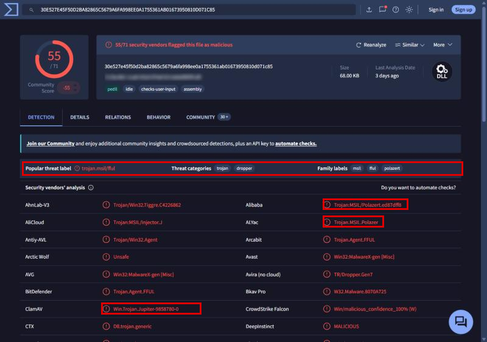
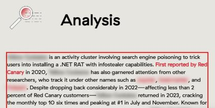
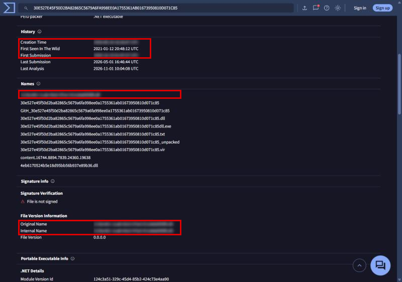
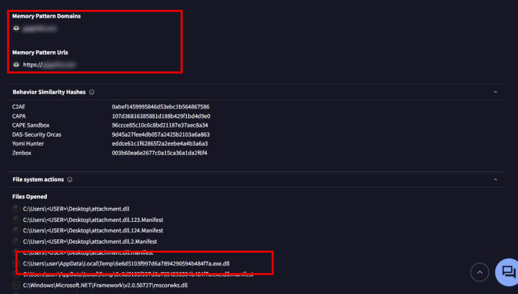

Yellow RAT
- Lab: Yellow RAT trên CyberDefenders. Nhóm Threat Intel, độ khó Easy, đã retired.
- Dữ liệu: file
hash.txtchứa SHA-25630E527E4...0D071C85. Bối cảnh: máy trạm của công ty GlobalTech Industries có lưu lượng ra ngoài đáng ngờ và truy vấn tìm kiếm của người dùng bị chuyển hướng. - Công cụ: VirusTotal (tab Detection, Details, Behavior) và trang threat trong Threat Detection Report của Red Canary.
- Quy ước:
- Ảnh là ảnh chụp trang VirusTotal và Red Canary, chụp ngày 04/11/2026. Giờ trên VirusTotal là UTC.
- Khung đỏ đánh dấu chỗ cần chú ý. Vùng làm mờ là đáp án (tên cụm, tên file, thời điểm, tên miền C2).
Tóm tắt kết quả
- Hash ứng với một DLL .NET (Win32 DLL, Mono/.Net assembly, 68,00 KB). VirusTotal ghi nhận 55/71 engine phát hiện, family labels
msil,fful,polazert. - Red Canary theo dõi hoạt động này dưới một tên cụm riêng. Đây là cụm dùng search engine poisoning (đẩy trang độc lên kết quả tìm kiếm) để dụ người dùng cài một RAT .NET có chức năng đánh cắp thông tin. Các nhà nghiên cứu khác gọi cụm này bằng 3 tên khác.
- Tên file gốc của mẫu có dạng GUID (chuỗi định danh 32 ký tự hex) với đuôi
.dll. - Trong sandbox, chuỗi URL HTTPS của một tên miền xuất hiện trong bộ nhớ của mẫu. Đây là máy chủ C2.
Bước 1: nhận diện họ mã độc
- Mục tiêu: biết mẫu thuộc họ nào trước khi tìm báo cáo.
- Cách làm: tra hash trên VirusTotal, xem tab Detection: Popular threat label, Family labels và nhãn của từng hãng.

- Nhận định:
- Các nhãn
PolazertvàJupiterlà tên của cùng một họ RAT .NET. - Tag
assemblyvàpedllcho biết đây là DLL viết bằng .NET.
Bước 2: gọi tên cụm mối đe dọa theo Red Canary
- Mục tiêu: biết Red Canary gọi cụm hoạt động này là gì.
- Cách làm: tìm tên họ mã độc ở Bước 1 trong Threat Detection Report của Red Canary, mở trang của cụm tương ứng, đọc mục Analysis.

- Nhận định:
- Một trong 3 tên khác trùng với nhãn Family labels trên VirusTotal ở Bước 1. Đây là cách nối mẫu với báo cáo của Red Canary.
- Hướng giải: tên cụm là tiêu đề trang và từ đầu tiên của đoạn Analysis.
Bước 3: tên file và các mốc thời gian
- Mục tiêu: lấy tên file gốc, thời điểm biên dịch và lần gửi đầu tiên.
- Cách làm: mở tab Details, xem mục History, Names và File Version Information.

- Nhận định:
- Original Name trong thông tin phiên bản (File Version Information) trùng với tên đầu tiên trong mục Names. Đây là tên do người viết mã độc đặt lúc biên dịch.
- Thời điểm biên dịch sớm hơn lần gửi đầu khoảng 3 tuần. First Seen In The Wild còn muộn hơn cả First Submission.
- Hướng giải: Creation Time và First Submission đọc trực tiếp trong mục History, theo giờ UTC.
Bước 4: máy chủ C2 và file trên đĩa
- Mục tiêu: xác định nơi mẫu kết nối tới và các file nó dùng.
- Cách làm: mở tab Behavior, xem mục Memory Pattern Domains, Memory Pattern Urls và Files Opened.

- Nhận định:
- Tên miền và URL HTTPS nằm sẵn trong bộ nhớ của mẫu khi chạy. Đây là địa chỉ C2 mà RAT dùng để nhận lệnh.
- Mẫu ghi và mở file trong thư mục
%TEMP%của người dùng, đúng hành vi đã được mô tả cho họ mã độc này. - VirusTotal không hiện file
.datmà lab hỏi. Tên file.datcần lấy từ báo cáo sandbox khác hoặc từ bài phân tích của Red Canary về cách mẫu lưu module đã mã hóa. - Hướng giải: địa chỉ C2 là URL trong Memory Pattern Urls.